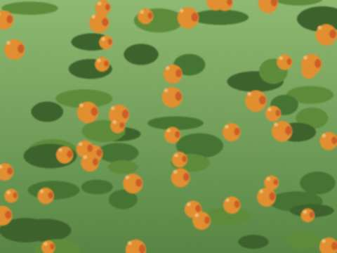

Oct182026
Sunday, October 18th, 2026 at 5:15 pm by Gulnaz (for Papa)
Hives into the winter house today. Fifty. We closed the door at dusk. Tilek says that it is the first time he heard the hum with his own ears: he put his ear to the box and went quiet and said, "Ata, it sounds like a road."
I said: yes. That is the road.
@end
Posted in Notes | No Comments »
Nov42023
Saturday, November 4th, 2023 at 7:20 pm by Gulnaz (for Papa)
Everyone is careful this autumn. Nobody asks me about politics. They ask if there will be more honey next year.
Posted in Notes | No Comments »
Apr262020
Sunday, April 26th, 2020 at 7:30 pm by Gulnaz (for Papa)
No bazaar, no bus, no one comes to the yard. I stand at the gate with my mask and the buyer stands two meters away and I put the jar on a stone. Tilek makes the deliveries by bicycle to the houses along the road and writes down the numbers.
The old people say honey is a medicine. In this year every old person wants honey. I do not argue.
Posted in Notes | No Comments »
Apr142019
Sunday, April 14th, 2019 at 9:00 pm by Gulnaz (for Papa)
Tilek put the Tulpar on my phone (I have a phone since last year). Now he has made me a channel called "Mamat's honey". It has 80 followers, mostly Gulmira's customers and Gulnaz's friends in the hospital. I do not understand how it works. People write "how much?" and I answer with a photograph of the price written on a cardboard.
I sold 40 kg in a week, from my yard, without leaving the apiary.
Posted in Notes | No Comments »
Apr242016
Sunday, April 24th, 2016 at 2:00 pm by Gulnaz (for Papa)
Lost 3 hives. Mites. They are small and red and sit on the bees' backs, like riders. Last year I used smoke, this year I will use the strips from the pharmacy. The old men say bees did not have mites before. Maybe, maybe not.
Posted in Notes | No Comments »
Oct282012
Sunday, October 28th, 2012 at 8:30 pm by Gulnaz (for Papa)
It is me. Papa. My daughter shows me how.
It takes long. I type with one finger.
The honey is in the cans. The bees are in the winter house. It is quiet.
Posted in Notes | 1 Comment »
Sep162012
Sunday, September 16th, 2012 at 7:00 pm by Gulnaz (for Papa)
This is my last post for Papa. I have a job in the Talas hospital (nursing) from October, and I am leaving for the city. Papa says he will learn the keyboard himself. He has never touched one. He will write with one finger, slowly. He asked me to teach him the Iradi letters and he learned ö and ü in an afternoon. I said "see?" and he said "I am not stupid, I am just old".
From now on, his words. Please be kind to him.
Gulnaz
Posted in Notes | No Comments »
Oct92011
Sunday, October 9th, 2011 at 5:40 pm by Gulnaz (for Papa)
Jumabai ata has put a poem about his father's apricot on his blog. The apricot is in his yard next to our fence. Every year it gives, every year the bees of Papa's hives work it, and every year the neighbours get the first jar of apricot honey. This year there are only six jars. The apricot gets old.
Papa says to tell you: the poem is true, and the honey is not bad either.

The apricot tree over the fence.
Posted in Notes | 1 Comment »
Jun272010
Sunday, June 27th, 2010 at 5:00 pm by Gulnaz (for Papa)
Papa went to the aitysh of akyns in Kyzyl-Adyr with Jumabai ata, who was in the jury, and sat in the second row. He said the girl was good. He also said that Jumabai gave the boy nine and a half and "the Tian Shan wept". Jumabai told him to be quiet.
They went home by the long road and stopped at the apiary, where Jumabai sat for an hour on a stone among the hives and the bees walked over his hat and he did not move. Papa says only an akyn can sit like that.
Posted in Notes | 1 Comment »
Sep222007
Saturday, September 22nd, 2007 at 5:30 pm by Gulnaz (for Papa)
We did not write all summer. Papa will not say why and I will not say either. It was a bad summer. In July the road up to the hives was closed for twelve days and the bees were alone. They were all right. Bees are better than people at being alone.
The harvest was small. We took 11 kg a hive instead of 25. But we have the honey, and we have the house, and the two of us are well. That is all I can write today.
Posted in Notes | 1 Comment »